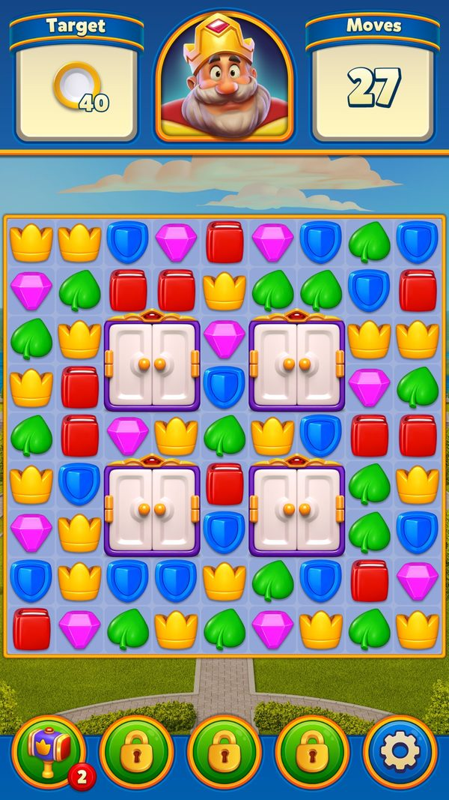
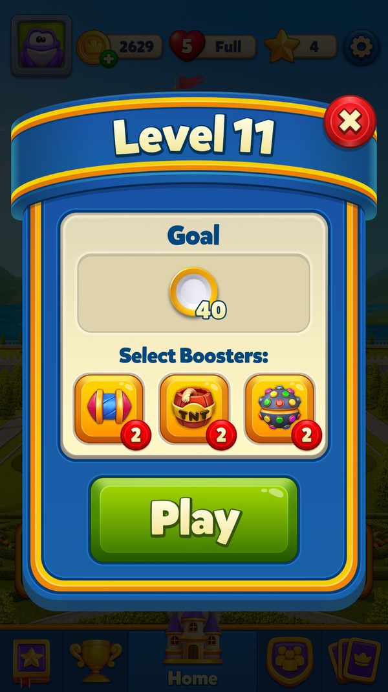
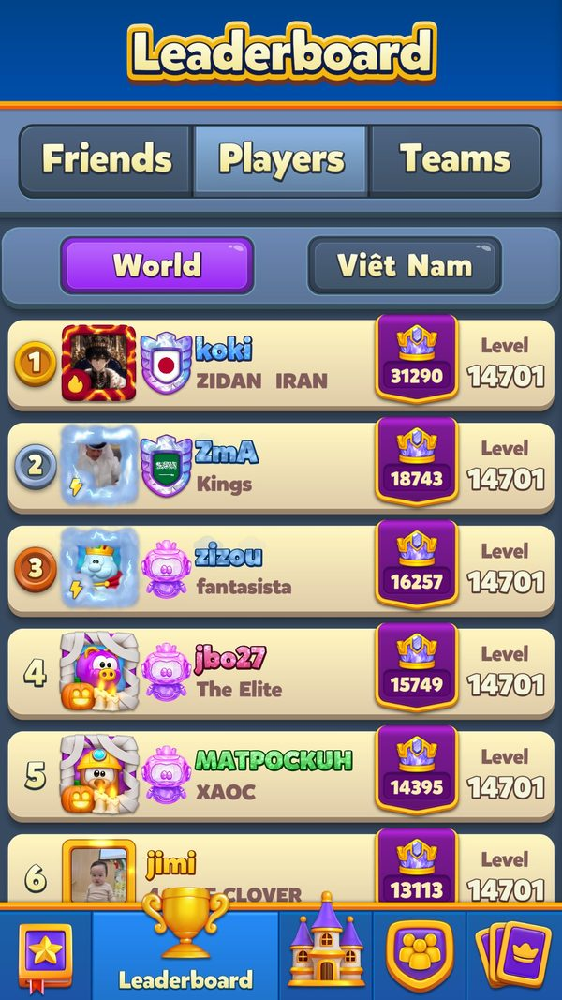
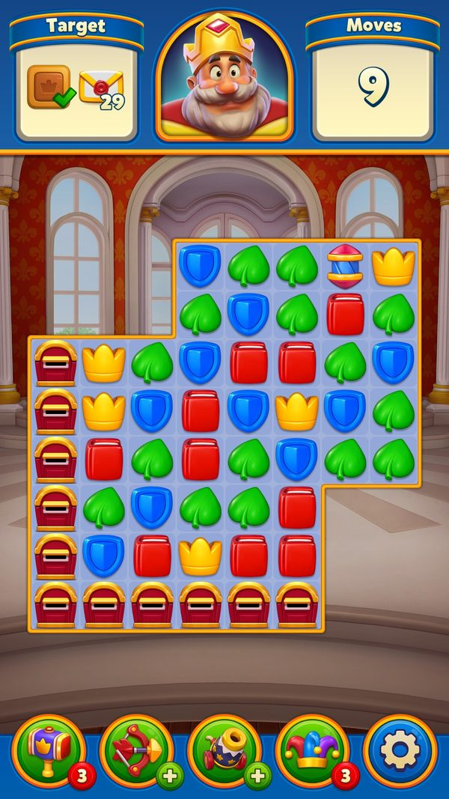
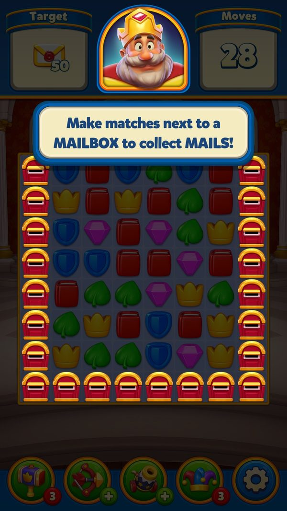

Độ khó động và phân khúc người chơi
Live-ops chỉnh độ khó từng màn và chia người chơi thành nhóm bằng những đòn bẩy nào, cái nào chạy ở máy, cái nào nằm hẳn trên server.
Bài này liệt kê các 'núm vặn' độ khó (nhịp màn khó, level vá, cộng nước theo nhóm AB, nước thưởng khi quay lại) và các con số phân khúc server gán. Đọc khoảng 8 phút. Phần chia nhóm AB xem liveops-ab-testing; phần người quay lại xem liveops-reengagement.
- ✅ Giá trị thật: lấy thẳng từ code, config server thật, save hoặc ảnh chụp khi chơi.
- 🧪 Ví dụ minh họa: con số đầu vào giả định để thấy cơ chế chạy; cách tính trong ví dụ là cách tính thật trong code.
- Tên kỹ thuật (class, method, key) để trong ngoặc hoặc ở dòng bằng chứng, để tra code khi cần.
Tóm tắt nhanh
- Nhịp màn khó cố định: tận cùng 2, 5, 9. Từ level 111, level tận cùng 2 là Hard, 5 là Super Hard, 9 là Extremely Hard (trừ level ngay sau màn dạy vật cản mới). Thưởng cuối màn cao hơn hẳn.Ví dụ ✅ Level 112 Hard → 100 coin khởi điểm, level 115 → 150, level 119 → 200; nhóm giảm thưởng (tài khoản test) chỉ được 30 / 50 / 100.
- 'Độ khó động' trong máy gần như đã tắt. Máy chỉ đếm số lần thua (từ level 101) và một chỉ số kỹ năng (tới level 100) rồi gửi lên. Hàm tính phân đoạn và cộng nước luôn trả 0.Ví dụ ✅ SemiDynamicDifficulty.GetSection / GetGroupMove = 0; hai file DynamicDifficultyEasy/Hard.json (43 đoạn) không có chỗ đọc.
- Núm mạnh nhất là level vá từ xa. Server thay file level mà không cần bản app mới, tập trung vào khối level mới nhất.Ví dụ ✅ 81 file vá đã tải, 65 file thuộc 14000–14499.
- Bảng cộng nước theo nhóm AB SLB. 5 nhóm, mỗi nhóm một danh sách level được cộng 1–9 nước và có thể chơi bản thiết kế khác, chỉ trong dải 75–229.Ví dụ ✅ Level 114: nhóm D +8 nước (bản 03), nhóm F +1 nước (bản 02), nhóm 5 như tài khoản test +0.
- Người quay lại được hạ độ khó. 25 màn có nước thưởng, và từ level 231 có bản màn dễ hơn.Ví dụ 🧪 Nghỉ 30 ngày, quay lại ở level 235 (Super Hard) → chơi bản 'reactivation-235' và được +10 nước (bảng bậc 2 bắt đầu 10; trần màn Super Hard 15).
- Trần nội dung do server đặt. Level tối đa, khối bundle được tải, level mở League.Ví dụ ✅ 09/09: 14500 / 14301 / 14501. 06/10 top người chơi đã ở 14701 → server đã nâng trần.
- Phân khúc là con số server gán, máy không biết tiêu chí. Mỗi event và offer có số phân khúc riêng; người thuộc nhóm có hệ số nhân còn nhận target cao hơn.Ví dụ ✅ Weekly Leaderboard phân khúc 3; Pinata target 25 / 35 / 60, nhóm butler 30 / 50 / 70 (+25%).
Ví dụ xuyên suốt: ba người chơi cùng tới level 114, khác nhóm SLB
Ba người: An (nhóm SLB D = 4), Bình (nhóm F = 6), Chi (nhóm 5, giống tài khoản test). ✅ Bảng cộng nước, quy tắc màn khó và giá Play On là thật. 🧪 Số nước gốc của level 114 giả định là 25 (file level chưa giải mã).
| Lúc | Người chơi làm gì | Game phản hồi | Kết quả |
|---|---|---|---|
| ✅ Level 11 (06/10) | Chi chơi level 11 | Dưới 75 nên chưa có SLB; dưới 101 nên chưa đếm thua | ✅ 27 lượt, mục tiêu 40 (ảnh chụp) |
| ✅ Level 11 | Chi hết lượt | Hiện Play On | ✅ 900 coin, +5 lượt |
| Level 114 | Cả ba bấm Play | Đọc bảng SLB theo nhóm | An: bản 03, 🧪 25 + 8 = 33 nước. Bình: bản 02, 🧪 25 + 1 = 26. Chi: bản gốc, 🧪 25 |
| Level 114 | Cả ba thua | Level > 100 → cộng 1 lần thua (tối đa 127), gửi kèm tiến độ | ✅ Server có dữ liệu thua để chỉnh tiếp |
| Level 115 | Vào màn | Tận cùng 5 → Super Hard; Prelevel hiện tag và thưởng | ✅ Chi (giảm thưởng) thấy 50 coin; người không giảm thấy 150 |
| Level 119 | Vào màn | Tận cùng 9 → Extremely Hard; tải bundle extreme_level_v2 | ✅ Thưởng 200 coin (100 khi giảm thưởng) |
| Level 132 | An và Bình vào màn | Bảng SLB | ✅ An: bản 03 +9; Bình: bản 02 +9 |
| Level 230 | Qua màn 229 | Bảng SLB dừng ở MoveUpdateFinishLevel = 230 | ✅ Từ đây cả ba cùng điều kiện nước |
Ba người cùng một màn nhưng khác số nước tới 8 nước và có thể khác cả bản thiết kế. Nếu cả ba đang đua cùng một event điểm, điều kiện không hoàn toàn như nhau (suy luận).



Ảnh chụp minh họa (6)
Ảnh chụp từ game thật trên LDPlayer. Bấm ảnh để phóng to, phím ← → để chuyển ảnh.








Luồng hoạt động (12 bước)
Tóm lại: server gán phân khúc → máy chọn bảng target → chọn file level (League / reactivation / vá / gốc) → xếp hạng màn khó → tính số nước → báo trước trên Prelevel → chơi, đếm thua → gửi dữ liệu → server vá level / đổi bảng
- 1Server gán phân khúcServerPing, Register và lệnh vào event mang số phân khúc và version.Ví dụ ✅ Phân khúc doanh thu version 1134; Weekly Leaderboard phân khúc 3, nhóm 10 người thật.
PingHttpCommand.UpdateOfferSegment / UpdateSpecialOfferSegment; server_fetched/EnterWeeklyLeaderboardRequest.json - 2Lưu phân khúcClientGhi số phân khúc và version vào save.Ví dụ ✅ UserOfferSegment 0, UserSegmentVersion 1134, DynamicOfferSegmentVersion 1334.
BasicUserData.UpdateOfferSegment; U.KeyValue - 3Chọn bảng targetClientConfig event có bảng theo phân khúc và bảng thay thế cho nhóm butler; nhóm được chụp vào tiến độ lúc sang đợt.Ví dụ ✅ Balloon Rise: tổng target 250, nhóm butler 350.
App_PinataConfig.json; BalloonRiseTableItem_ServerEventConfig.json; PinataProgress.ResetProgressForNewEvent - 4Chọn file levelClientThứ tự: League → story → bản reactivation → bản vá CDN → bản trong game → episode bundle. Nhóm SLB có thể đổi sang bản thiết kế khác.Ví dụ ✅ Level 114 nhóm D đọc '114v03'.
LevelManager.ResourcesLoad / GetLevelByName; SlbMoveConfigHelper.TryGetLevelNameOverride - 5Xếp hạng màn khóClientLevel từ 111, tận cùng 2 / 5 / 9, không ngay sau màn dạy vật cản.Ví dụ ✅ 112 Hard, 115 Super Hard, 119 Extremely Hard; 122 bị loại (ngay sau màn dạy 121).
ExtremeLevelsManager.GetExtremeLevelType / IsLevelAvailableForExtreme - 6Tính số nướcClientLeague có số nước riêng; cộng bảng SLB; cộng nước thưởng quay lại; sàn 20 nước.Ví dụ 🧪 Level 114 gốc 25 nước → nhóm D 33.
LevelEpisodeHelper.GetUpdatedMoveCount; SlbMoveConfigHelper.GetMoveAdjustment; WelcomeBackGiftManager.GetExtraMoveCount; MoveManager.MinMoveAmount - 7Báo trước trên PrelevelPlayerHiện tag khó và thưởng; phần cộng nước ẩn thì không ghi.Ví dụ ✅ Nhóm giảm thưởng thấy 30 / 50 / 100 coin thay vì 100 / 150 / 200.
PrelevelDialog.PrepareDifficulty; RemainingMovesManager.GetInitialCoinAmount - 8Đếm thua và kỹ năngClientTừ level 101 mỗi lần thắng, thua hoặc thấy Play On lần đầu cộng 1 (tối đa 127); kỹ năng 3 bit chỉ cập nhật tới level 100.Ví dụ ✅ Level 11 của tài khoản test chưa được đếm.
SemiDynamicDifficulty.IncrementTryCount; UserInventory.GetTryCount / GetSkill - 9Cứu màn trả phíPlayerHết lượt → Play On; từ level 149 có offer riêng cho màn cực khó (server tắt được).Ví dụ ✅ Play On lần 1: 900 coin, +5 lượt.
EgoManager; ExtremelyHardLevelOfferHelper (Flags bit 45, AB 195/196) - 10Gửi dữ liệuClientSự kiện bắt đầu/kết thúc màn mang số nước được cho, nước còn lại, kỹ năng, số Play On…Ví dụ ✅ LevelEnd có moves_given, moves_left, ego_count, useless_move_count.
AnalyticsManager.LevelStart / PrepareLevelEndEvent - 11Server chỉnh lạiServerVá file level, sửa bảng SLB, đổi nhóm; máy nhận ở lần mở sau.Ví dụ ✅ 59/81 file vá nằm ở 14301–14500, khối mới nhất.
RemoteConfigManager.GetVersionConfig; SlbMoveConfigHelper.DownloadConfig - 12Giới hạn nội dungServerVượt level tối đa thì chờ level mới; đủ level mở League thì vào League.Ví dụ ✅ 09/09 MaxLevel 14500 → 06/10 top người chơi ở 14701.
LevelManager.UpdateMaxPublishedLevel; LeagueManager.UpdateRequiredLevel

Nhánh & ngoại lệ
| Khi | Thì | Ví dụ | Bằng chứng |
|---|---|---|---|
| Nhóm SLB không thuộc 2, 3, 4, 6, 7, 8 | Không cộng nước, không đổi file. | ✅ Tài khoản test nhóm 5. | SuperBoosterManager.IsGroupInSlbAb |
| Đổi nhóm SLB khi đã gặp SLB | Giữ nhóm cũ tới khi qua level 230. | 🧪 Người chơi nhóm D đang ở level 150, server đổi sang nhóm F → các màn 151–229 vẫn theo bảng D; qua level 230 mới nhận nhóm F. | SuperBoosterManager.SetAbValues (Level > 230) |
| Màn League hoặc story | Không đếm thua; League dùng số nước riêng. | 🧪 Người ở League chơi lại level 115 với số nước của League. | SemiDynamicDifficulty.NotApplicableForSkill |
| Quay lại sau ≥ 15 ngày, level ≥ 20 | 25 màn có nước thưởng; từ level 231 có bản dễ hơn. | 🧪 Nghỉ 30 ngày ở level 235 → bản 'reactivation-235', +10 nước. | WelcomeBackGiftManager.IsMoveGiftActive; ReactivationLevelsManager.WelcomeBackGiftReceived |
| File vá hỏng | Xoá file, dùng bản cũ; save màn dở bị huỷ nếu bản đổi. | ✅ Log mẫu: 'Level restore invalidated due to remote level.' | RemoteConfigManager.OnFileSaveCompleted; LevelRestoreManager.ValidateLoadFile |
| Vượt level tối đa | Home chờ level mới hoặc chuyển sang League. | ✅ Ngày 09/09: hết level 14500 → level 14501 là League. | LevelManager.UpdateMaxPlayableLevel |
| Chưa có phân khúc | Dùng phân khúc mặc định. | ✅ Pinata mặc định phân khúc 3; offer 0. | PinataPartyManager; U.KeyValue UserOfferSegment |
Các núm chỉnh độ khó
Tóm lại: nhịp cố định → level vá → cộng nước theo nhóm → nước thưởng khi quay lại → bán cứu màn
| Núm | Ai điều khiển | Phạm vi | Người chơi có thấy? | Ví dụ |
|---|---|---|---|---|
| Nhịp 2 / 5 / 9 | Client | Level ≥ 111 | Có (tag Prelevel) | ✅ 112 Hard, 115 Super Hard, 119 Extremely Hard |
| Level vá | Server qua CDN | Mọi level | Không | ✅ 81 file, 65 file ở 14000–14499 |
| Cộng nước SLB | Server + AB | Level 75–229 | Không | ✅ Level 132: nhóm D +9, nhóm F +9 |
| Nước thưởng quay lại | Client | 25 màn sau quà | Một phần | ✅ Bậc 2: 10 nước ở 5 màn đầu |
| Bản reactivation | Client + level vá | Level ≥ 231, ngay sau màn bonus | Không | ✅ 90 bản, 22 bản cho màn khó |
| Số nước League | Server | Royal League | Không | (server, chưa đọc được) |
| Đếm thua / kỹ năng | Client đếm, server dùng | > 100 / ≤ 100 | Không | ✅ Tối đa 127 lần; kỹ năng 3 bit |
| Cứu màn trả phí | Client + Flags / AB | Hết lượt; offer màn cực khó từ 149 | Có | ✅ Play On 900 coin, +5 lượt |
Bảng cộng nước SLB thật
Tóm lại: nhóm AB → danh sách '<level>v<bản>' → số nước cộng
Thứ tự chữ C / D / F / G / H khớp nhóm 3 / 4 / 6 / 7 / 8 (suy luận theo thứ tự trong code). Nhóm 2 được coi là bật nhưng không có danh sách riêng.
| Khoá | Nhóm AB | Bắt đầu | Số level | Cộng | Ví dụ |
|---|---|---|---|---|---|
| c | 3 | 160 | 46 | +1 … +6 (tổng 119) | ✅ 162v02 +2 |
| d | 4 | 75 | 111 | +1 … +9 (tổng 319) | ✅ 75v02 +3, 88v03 +7, 114v03 +8 |
| f | 6 | 111 | 84 | +1 … +9 (tổng 208) | ✅ 114v02 +1, 132v02 +9 |
| g | 7 | 111 | 53 | +1 … +6 (tổng 110) | ✅ 229v02 +1 |
| h | 8 | 211 | 12 | +1 … +2 (tổng 15) | ✅ 212v02 +1 |
Target cao hơn cho nhóm có hệ số nhân
Tóm lại: thu vật phẩm nhanh hơn → target cao hơn → nhịp thưởng giữ nguyên
Nhóm butlers_multiplier_2 (id 79/80) có hệ số nhân của Butler's Gift nên thu vật phẩm event nhanh hơn. Server gửi kèm bảng target riêng cho nhóm này. Tài khoản test không thuộc nhóm nên dùng bảng thường.
| Event | Target thường | Target nhóm butler | Chênh | Ví dụ |
|---|---|---|---|---|
| Pinata Party bản 283 | 25 / 35 / 60 | 30 / 50 / 70 | +25% | 🧪 Người nhóm butler cần thêm 10 vật phẩm ở mốc 2 |
| Balloon Rise bản 414 | tổng 250 (10 bậc) | tổng 350 | +40% | ✅ Bậc cuối 50 → 100 |
| Royal Pass bản 90 | tổng 865 (31 bậc, bỏ mốc 1000) | tổng 1187 | +37% | ✅ Bậc 6: 8 → 10 |
| Book of Treasure bản 2139 | 25 bậc | trống (không áp) | - | — |
Các con số phân khúc máy nhìn thấy
Tóm lại: server gán số → máy chọn bảng → tiêu chí vẫn nằm ở server
| Phân khúc | Nguồn | Giá trị | Dùng cho | Ví dụ |
|---|---|---|---|---|
| Doanh thu | Ping | không gửi (= 0), version 1134 | Offer theo mức chi (xem nhóm Sale) | ✅ UserOfferSegment 0 |
| Dynamic offer | DynamicOfferAllInfo | version 1333 → 1334; UserSegment -1 (08/09) | Dynamic offer | ✅ Version tăng sau 1 ngày |
| Weekly Leaderboard | Lệnh vào event | 3 | Ghép bảng tuần | ✅ Nhóm 10 người thật |
| Pinata | Tiến độ (4 bit) | mặc định 3 | Target | ✅ Bản 283: cả 6 phân khúc cùng 25 / 35 / 60 |
| Archery Arena | Tiến độ bit 50–56 | (server, chưa đọc được) | Ghép nhóm | — |
| Team Tournament | Lệnh vào event | (server, chưa đọc được) | Ghép đội | — |
| Mức chi cho hỗ trợ | Client tính | 100 / 500 / 1k / 2k / 5k / 10k / 20k / 50k | Ưu tiên ticket Helpshift | 🧪 Người đã chi 600 USD mang tag '500' |
Số liệu chính
| Chỉ số | Giá trị | Số liệu do | Nguồn |
|---|---|---|---|
| Level bắt đầu nhịp 2 / 5 / 9 | 111 (nền màn khó từ level 39) | Client | ExtremeLevelsManager; HardLevelBundle.FirstHardLevel |
| Thưởng khởi điểm màn khó | 100 / 150 / 200 coin (giảm: 30 / 50 / 100) | Client + AB | RemainingMovesManager.GetInitialCoinAmount |
| Level vá đã tải / ở 14000–14499 | 81 / 65 | Đo trên máy | App.RemoteDownloadedLevelNames |
| Level có cộng nước SLB | 46 / 111 / 84 / 53 / 12 | Server | cdn_configs/superlightball-ab-config.txt |
| Level dừng SLB / sàn số nước | 230 / 20 | Client | SlbMoveConfigHelper; MoveManager.MinMoveAmount |
| Level 11: lượt / mục tiêu | 27 / 40 | Đo trên máy | feature_extras.json (LevelGoals, 06/10) |
| Play On lần 1 | 900 coin, +5 lượt | Đo trên máy | feature_extras.json (Ego) |
| MaxLevel / MaxLevelForBundle / RequiredLevelForLeague (09/09) | 14500 / 14301 / 14501 | Server | decoded_new/004_1_PingResponse.json |
| Level của top Players (06/10) | 14701 | Đo trên máy | feature_extras.json (Leaderboard) |
| Bản reactivation | 90 (231 … 12805) | Client | Resources/reactivation_levels_config.json |
Đánh giá
Thang 1–5 (với tiêu chí rủi ro, 5 = rủi ro cao). Trung bình: 3.8.
| Tiêu chí | Điểm | Nhận xét |
|---|---|---|
| Linh hoạt khi chỉnh độ khó | 5/5 | Chỉnh được từng file level, từng nhóm (SLB), từng hoàn cảnh (quay lại) mà không cần bản app. |
| Minh bạch với người chơi | 3/5 | Tag màn khó và thưởng hiện rõ; cộng nước ẩn thì không, ví dụ 33 nước so với 25 ở level 114. |
| Thử nghiệm độ khó | 4/5 | 5 nhóm SLB song song, có đóng băng; nhưng chỉ trong dải 75–229. |
| Công bằng khi thi đấu | 3/5 | Event điểm dùng chung màn nhưng số nước khác theo nhóm (suy luận). |
| Rủi ro lẫn dữ liệu đo (5 = cao) | 4/5 | Level vá, SLB, nước quay lại, giảm thưởng cùng tác động một màn; analytics có extra_moves nhưng không nói nước cộng từ đâu. |
- Quyết định độ khó nằm ở server/CDN: chỉnh nhanh, đồng loạt.
- Nhịp 2 / 5 / 9 có thưởng cao tạo động lực và chỗ bán cứu màn đúng lúc.
- Có chốt bảo vệ: không đặt màn cực khó ngay sau màn dạy vật cản, sàn 20 nước, đóng băng nhóm SLB.
- Bảng target butler giữ cân bằng khi tính năng khác làm đổi tốc độ thu vật phẩm.
- Code độ khó động trong app là vỏ rỗng còn sót.
- Không có tham số analytics nói rõ nguồn cộng nước.
- Phân khúc hoàn toàn mờ với app, khó trả lời khiếu nại 'người khác dễ hơn'.
- Sửa sai bảng SLB → cả nhóm (ví dụ 111 level của nhóm D) bị ảnh hưởng ở lần mở app sau.
- Vá file level khi người chơi đang dở màn → save màn bị huỷ (suy luận: mất tiến độ màn đó).
- Level mở League = level tối đa + 1: server quên nâng khi thêm level thì League có thể khoá nhầm (suy luận).
- Thêm 'move_bonus_source' (slb / quay lại / league / không) và 'level_variant' (vá / reactivation / bản SLB) vào sự kiện bắt đầu màn.
- Dọn SemiDynamicDifficulty và hai file DynamicDifficulty*.json, hoặc ghi rõ đã chuyển lên server.
- Không vá file của màn người chơi đang có save dở; áp bản mới từ lần chơi sau.
- Game tương tự: giữ nhiều núm nhỏ, mỗi núm có một kill-switch và một nhãn đo riêng; mỗi khi thêm tính năng làm đổi tốc độ kiếm tài nguyên thì thêm bảng target thay thế như butler.
Liên quan
Độ khó level (Difficulty) Luồng chơi level (LevelFlow) Mục tiêu level (Goals) Super Booster (Super Lightball) Level tái kích hoạt Quà quay lại (Welcome Back) Royal League Mua thêm nước (Ego) Pinata Party Balloon Rise Royal Pass Weekly Leaderboard Dynamic Offer (offer động) Offer theo segment Bảng xếp hạng (Leaderboard) 📊 A/B test: chia nhóm, đọc nhóm và 52 thí nghiệm trên một tài khoản 📊 Config từ xa đi xuống máy người chơi như thế nào 📊 Giữ chân và kéo người chơi quay lại: thông báo, Welcome Back, deeplink, hộp thư 📊 Cá nhân hoá offer theo người chơi 📊 Kiếm tiền trong màn: Play On, booster, mạng, quảng cáo 📊 Thi đấu cá nhân: đua, xếp hạng và người chơi ảo
Nguồn đã đọc
gdd/Difficulty.json, ReactivationLevels.json, WelcomeBackGift.json, LevelFlow.json, League.json, Ego.jsonfacts/runtime/cdn_configs/superlightball-ab-config.txt; server_configs/App_SLBMoveConfig.jsonfacts/runtime/server_configs/App_PinataConfig.json, BalloonRiseTableItem_ServerEventConfig.json, App_RoyalPassConfig.json, User_MadnessConfig.jsonfacts/runtime/_backup_lvl8/App, U_2712389101facts/runtime/decoded_new/004_1_PingResponse.json; decoded_old/004_4_UpdateUserProgressResponse.jsonfacts/runtime/server_fetched/EnterWeeklyLeaderboardRequest.jsonfeature_extras.json (LevelGoals, Ego, Leaderboard, đo 06/10)PseudoC SuperBoosterManager.SetAbValues / IsGroupInSlbAb; PinataProgress.ResetProgressForNewEventPseudoC PingHttpCommand.UpdateOfferSegment / ProcessSettingsfeatures/ExtremeLevelsManager.md, SlbMoveConfigHelper.md, ReactivationLevelsManager.md, WelcomeBackGiftManager.md